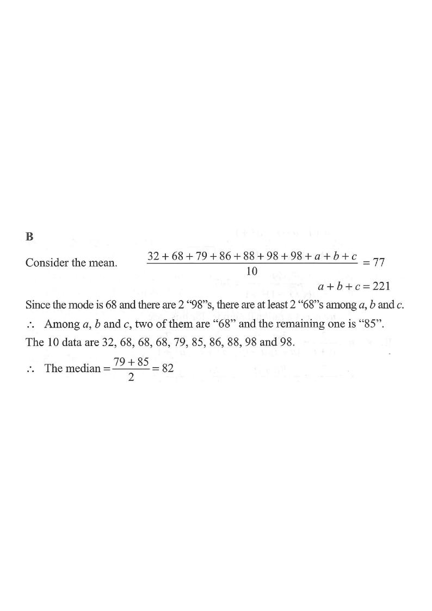

Scroll the solution to watch each step highlight.
Consider the following data:
If the mean and the mode of the above data are $77$ and $68$ respectively, then the median of the above data is

There are 10 data values. Using the mean $=77$:
$$\frac{32+68+79+86+88+98+98+a+b+c}{10}=77$$
Sum of the known values: $32+68+79+86+88+98+98=549$.
$$549+a+b+c=770 \;\Rightarrow\; a+b+c=221$$
The mode is $68$. Currently $98$ appears twice, so $68$ must appear at least twice as well.
$\therefore$ Among $a,b,c$, exactly two of them equal $68$ (if all three were $68$, the mode would still be $68$, but then $a+b+c=204\ne221$, so exactly two).
Let the remaining value be $x$: $\quad 68+68+x=221 \;\Rightarrow\; x=85$.
The 10 data values are:
$$32,\;68,\;68,\;68,\;79,\;85,\;86,\;88,\;98,\;98$$
With $n=10$ (even), the median is the mean of the $\tfrac{10}{2}=5$th and $6$th values:
$$5\text{th}=79,\qquad 6\text{th}=85$$
$$\text{Median}=\frac{79+85}{2}=82$$